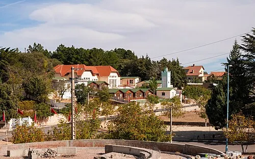
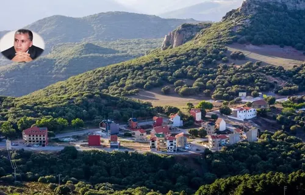
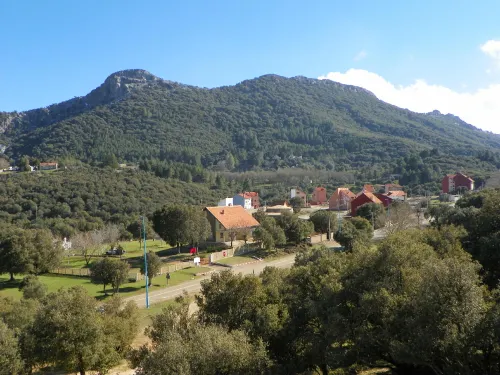

Bab Boudir
Introduction
Une porte de montagne
Bab Boudir est un lieu de montagne paisible à proximité de Taza, connu pour ses paysages rocheux et ses sentiers naturels. Cette destination est parfaite pour les amoureux de randonnées et de panoramas calmes.
Le site offre des vues sur les montagnes environnantes et une atmosphère authentique, avec des possibilités d'exploration en plein air et de découverte de la nature locale.
Galerie



Informations pratiques
Localisation
Région montagneuse près de Taza, accessible depuis la route principale
Accès
Accès par route secondaire, sentiers bien visibles
Meilleure période
Printemps et automne pour des températures agréables
Tarifs
Accès libre, activité de randonnée gratuite
Conseils pour les visiteurs
Portez des chaussures de randonnée
Le terrain est rocheux. Des chaussures robustes offrent plus de confort et de stabilité.
Respectez la nature
Ne laissez aucun déchet et protégez les plantes locales pendant votre visite.
Protégez-vous du soleil
Emportez un chapeau et de l'eau, car les espaces ouverts peuvent être ensoleillés.
Voyagez en groupe si possible
Une randonnée en groupe est plus sûre et plus agréable, surtout sur terrain montagneux.